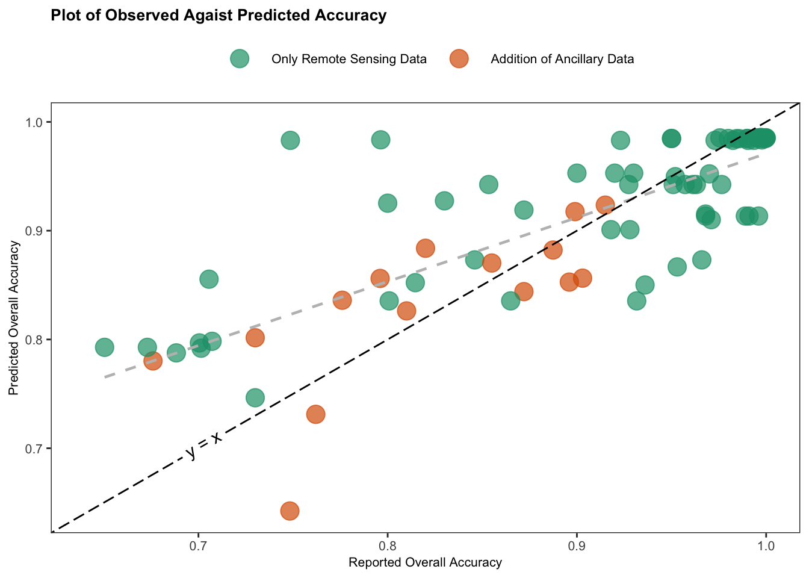

4 Results
Descriptive Statistics
A total of \(n = 20\) studies with \(k = 86\) effect sizes were included in this analysis, with each primary study reported between one and 27 results (\(1 \leq k_j \leq 27\)). The research area of these studies span 18 countries, Figure 4.1 (a) shows a map indicating the location of each effect size. These primary studies were grouped into three different SDG goals: SDG 2 (Zero Hunger), SDG 11 (Sustainable Cities), and SDG 15 (Life on Land).


Figure 4.1 (b) and Table 4.1 (bellow) show, the reported overall accuracies are not centered around 0.5. Therefore, a transformation is required. Figure 4.2 shows the distribution of observed overall accuracy as well as the logit and FT transformation values. FT visually performs better than the Logit transformation. However the Shapiro-Wilk Normality Test shows that the distribution of the FT transformed overall accuracy still departed significantly from normality (\(W =\) 0.93, p-value < 0.01). Nevertheless, conducting a meta-analysis remains justified, as these statistical models are generally robust against violations of normality (McCulloch & Neuhaus, 2011).
Table 4.1 summarises the overall accuracy (effect size of interest), study sample size and the collected study features, including the study features such as sample size, overall accuracy, types of machine learning models used and SDG goal targeted. For the meta-analysis the range of the sample size (259 - 75782016) and overall accuracy (0.6504 - 1) are of importance. Most studies used Neural Networks (48%), followed by Tree-Based Models (45%), and a small portion used other types of models (7%). Regarding SDGs, 44% of the studies aimed at SDG 11 (Sustainable Cities), 43% targeted SDG 15 (Life on Land), and 13% focused on SDG 2 (Zero Hunger).
| Feature | Statistic |
|---|---|
| Overall Accuracy | 0.90 (0.65 - 1.00) |
| Study Features | |
| Numeric b | |
| Sample Size | 6,401,352.08 (259.00 - 75,782,016.00) |
| Number of Citations | 14.84 (2.00 - 68.00) |
| Number of Classes | 3.71 (2.00 - 13.00) |
| Majority-class Proportion | 0.72 (0.14 - 1.00) |
| Categorical c | |
| Publication Year | |
| 2018 | 7 (8.1%) |
| 2019 | 4 (4.7%) |
| 2020 | 30 (35%) |
| 2021 | 6 (7.0%) |
| 2022 | 13 (15%) |
| 2023 | 26 (30%) |
| SDG Theme | |
| SDG11: Sustainable Cities | 38 (44%) |
| SDG15: Life on Land | 37 (43%) |
| SDG2: Zero Hunger | 11 (13%) |
| Classification Type | |
| Object-level | 46 (53%) |
| Pixel-level | 36 (42%) |
| Unclear | 4 (4.7%) |
| Model Group | |
| Neural Networks | 41 (48%) |
| Other | 6 (7.0%) |
| Tree-Based Models | 39 (45%) |
| Ancillary Data | |
| Remote Sensing Only | 71 (83%) |
| Ancillary Data Included | 15 (17%) |
| Indices | |
| Not Used | 23 (27%) |
| Used | 63 (73%) |
| Remote Sensing Type | |
| Active | 11 (13%) |
| Combined | 7 (8.1%) |
| Not Reported | 7 (8.1%) |
| Passive | 61 (71%) |
| Device Group | |
| Landsat | 15 (17%) |
| Not Reported | 7 (8.1%) |
| Other | 44 (51%) |
| Sentinel | 20 (23%) |
| Number of Spectral Bands | |
| Low | 18 (21%) |
| Mid | 26 (30%) |
| Not Reported | 42 (49%) |
| Spatial Resolution | |
| >1 metres | 7 (8.1%) |
| 10-30 metres | 39 (45%) |
| Not Reported | 40 (47%) |
| Confusion Matrix | |
| Not Reported | 23 (27%) |
| Reported | 63 (73%) |
| a Effect size of interest, b. Numeric: mean (min - max), c. Categorical variables: number of effect sizes (%) | |

Meta-analysis
The forest plot below (Figure 4.5) compares the overall accuracy effect size across studies using both weighted and unweighted models, with error bars which correspond to the weighted model — at this scale there is no discernible difference between the error bars of the two models. Each study is given with the number of estimates per study \(k_j\), and study average effect size (\(\kappa_j\)), with 95% confidence intervals (CI), both for the weighted and unweighted model. Of the 20 primary studies included, six reported only one effect. Based on the unweighted model, the average accuracy of machine learning methods applied to remote sensing data is 0.90 (95% CI[0.85; 0.94]). While the three-level meta-analytic model produced an average accuracy of 0.89 (95% CI[0.85; 0.93]). This implies, that on average, the machine learning methods correctly classify around 90% of the time when applied to remote sensing data.
The heterogeneity metrics Cochran’s Q indicate significant heterogeneity of the reported overall acccuracies. The percentage of the variance attribution is \(I^2_{\text{level3}}\) = 63.62% which is the fraction of the variation that can be attributed to between-study, and \(I^2_{\text{level2}}\) = 36.38% which is within-study heterogeneity, with negligible fixed effect variance (variance due to sampling error). The \(I^2\) value of 100% indicates that all the observed variability in effect sizes across studies is due to heterogeneity rather than sampling error, suggesting substantial differences between the studies and a high degree of variation in their results.
Model Selection
Using the multi-model inference function, a total of 31,298 models were fitted. Figure 4.6, illustrates the predictor importance after evaluating all possible combinations of predictors to identify which combination provides the best fit and which predictors are most influential. Higher importance values indicate more consistent inclusion in high-weight models. The majority class proportion is the most important predictor, followed by the inclusion of ancillary data. Less influential predictors include used of indices, sample size, publication year, and the number of classes in the study. Meanwhile, factors such as classification type, SDG goal, machine learning group, spatial resolution, and citation count have minimal importance in the overall model performance (i.e., where not included in the models top performing models according to AIC).

Table 4.2 shows the results of the multi-model inference. The significant study features are the Majority-class Proportion and the inclusion of ancillary data. Interestingly, the use of ancillary data has a negative effect on overall accuracy.
| Feature | Category | Importance | b | SE | z.value | p |
|---|---|---|---|---|---|---|
| Intercept | 1.29 | 7.85 | 0.16 | 0.869 | ||
| Majority-class Proportion | 1 | 0.47 | 0.08 | 6.15 | < .0001 | |
| Ancillary Data | 0.92 | |||||
| Remote Sensing Only | -0.12 | 0.05 | 2.33 | 0.02 | ||
| Indices | 0.39 | |||||
| Used | 0.03 | 0.04 | 0.67 | 0.5 | ||
| Number of Spectral Bands | 0.38 | |||||
| Mid | 0.05 | 0.06 | 0.72 | 0.471 | ||
| Not Reported | 0.02 | 0.04 | 0.55 | 0.581 | ||
| Confusion Matrix | 0.16 | |||||
| Reported | 0.01 | 0.02 | 0.29 | 0.776 | ||
| Sample Size | 0.13 | 0 | 0 | 0.1 | 0.922 | |
| Number of Classes | 0.11 | 0 | 0 | 0.19 | 0.846 | |
| Publication Year | 0.1 | 0 | 0 | 0.06 | 0.952 | |
| Remote Sensing Type | 0.03 | |||||
| Combined | 0.01 | 0.03 | 0.17 | 0.869 | ||
| Not Reported | 0 | 0.02 | 0.04 | 0.971 | ||
| Passive | 0 | 0.02 | 0.16 | 0.87 | ||
| Spatial Resolution | 0.02 | |||||
| 10-30 metres | 0 | 0.07 | 0.01 | 0.99 | ||
| Not Reported | 0 | 0.07 | 0 | 0.996 | ||
| SDG Theme | 0.02 | |||||
| SDG15: Life on Land | 0 | 0.01 | 0.1 | 0.924 | ||
| SDG2: Zero Hunger | 0 | 0.01 | 0.08 | 0.939 | ||
| Classification Type | 0.02 | |||||
| Pixel-level | 0 | 0.01 | 0.06 | 0.955 | ||
| Unclear | 0 | 0.01 | 0.05 | 0.958 | ||
| Model Group | 0.01 | |||||
| Other | 0 | 0.01 | 0.04 | 0.965 | ||
| Tree-Based Models | 0 | 0.01 | 0.05 | 0.961 | ||
| Device Group | 0 | |||||
| Not Reported | 0 | 0.01 | 0.05 | 0.956 | ||
| Other | 0 | 0 | 0.05 | 0.963 | ||
| Sentinel | 0 | 0.01 | 0.05 | 0.959 | ||
| Number of Citations | 0 | 0 | 0 | 0.01 | 0.995 |
Multimodel inference something about best 5 models and comparing AIC
| Candidate models | df | AIC_c | Akaike weights |
|---|---|---|---|
| Ancillary Data + Majority-class Proportion + Indices | 5 | -115.46 | 0.39 |
| Ancillary Data + Majority-class Proportion + Number of Spectral Bands | 6 | -114.42 | 0.23 |
| Ancillary Data + Majority-class Proportion | 4 | -114.13 | 0.20 |
| Ancillary Data + Confusion Matrix + Majority-class Proportion + Number of Spectral Bands | 7 | -113.08 | 0.12 |
| Ancillary Data + Majority-class Proportion + Number of Spectral Bands + Sample Size | 7 | -111.65 | 0.06 |
| Intercept-Only | 2 | -41.93 | 0.00 |
Table 4.4 shows the estimated coefficients for the best fit model (lowest AIC), both in the FT transformed scale (b) and on the natural scale (b back-transformed). This shows that the proportion of majority class has the largest positive impact on the model’s outcome (b = 0.39, p < .001), while the inclusion of ancillary data has a small negative effect (b = -0.11, p = 0.029) but a small but positive effect when back-transfored . The use of indices has a minimal and non-significant effect (b = 0.06, p = 0.131).
| Predictor | b | SE | t | p | b_BT | CI |
|---|---|---|---|---|---|---|
| intercept | 0.99 | 0.06 | 17.22 | 0.000 | 0.70 | [0.58, 0.8] |
| fraction_majority_class | 0.39 | 0.08 | 4.93 | 0.000 | 0.15 | [0.05, 0.27] |
| ancillaryAncillary Data Included | -0.11 | 0.05 | -2.22 | 0.029 | 0.01 | [0.04, 0] |
| indicesUsed | 0.06 | 0.04 | 1.53 | 0.131 | 0.00 | [0, 0.02] |
| Note: | ||||||
| The estimated coefficients (b), standard errors (SE) on the FT transformed scale, t-statistics, and p-values. Additionally, the coefficients (b) and their confidence intervals (CI) are shown on the back-transformed scale. |
| Paramter | Intercept Only | Majority-class Proportion | Ancillary Data | Ancillary Data + Majority-class Proportion + Indices |
|---|---|---|---|---|
| sig_lvl2 | 0.01 | 0.009 | 0.01 | 0.009 |
| sig_lvl3 | 0.017 | 0.007 | 0.015 | 0.005 |
| QE | 12161784 | 11458055 | 12035286 | 11440331 |
| df_Q | 85 | 84 | 84 | 82 |
| p_Q | 0 | 0 | 0 | 0 |
| F | NA | 27 | 3 | 13 |
| df_F | NA | 1 | 1 | 3 |
| p_F | NA | 0 | 0.117 | 0 |
| I2_lvl2 | 36.38 | 57.29 | 40.47 | 63.46 |
| I2_lvl3 | 63.62 | 42.71 | 59.53 | 36.54 |
| R2_lvl2 | NA | 7.8 | -1.4 | 8.6 |
| R2_lvl3 | NA | 60.7 | 14.7 | 69.9 |
| Note: | ||||
| Test statistic, degrees of freedom and respective p values are provide. This table allows heterogeneity at level 2 and 3 can be compared between the incetept only model, Majority-class Proportion and Adncillary Data only models, as well as the combinded model |
Table 4.5 shows the parameter estimates of the meta-analysis comparing the intercept only and three mixed effects models: (1) with the Majority-class Proportion as the only covariate, (2) use Ancillary Data only, and (3) the best fit model (from Table 4.4). Majority-class Proportion explains more of the between study heterogeneity, as shown by the difference in \(\sigma^2_{\text{level2}}\) between the intercept only and the Majority-class Proportion. The use of Ancillary Data explains relatively little between study heterogeneity and negligible within study heterogeneity. The combined model explains the most heterogeneity. This shift is also reflect in the \(I^2\). The total \(I^2\) consistently being 100% in both models indicates that almost none of the variation between effect sizes can be attributed to sampling error, this might suggest that the included studies are too different from each to compare (see discussion for apples and oranges problem). All models show significant heterogeneity (Cochran’s Q, p < 0.001) results. The \(R^2\)values show that the covariates in the combined mixed effects model explain 69.9% of the variance at level 3 and 8.6% at level 2.
Figure 4.7 illustrates the relationship between the proportion of the majority class and overall accuracy of the individual studies included in the meta-analysis. The plot is based on combined mixed effects model, with the solid black line representing the fitted regression line and the shaded area indicating the 95% confidence interval. Each point (bubble) represents a study, with its size proportional to the weight it received in the analysis (larger points indicate studies with more influence). The plot shows that as the proportion of the majority class increases, overall accuracy tends to improve.

Figure 4.8 shows the observed overall accuracy against the predicted overall accuracy’s made by combined mixed effects model. The points are coloured by the addition of ancillary information in the primary study. It appears that the addition of ancillary information leads to a lower overall accuracy, however, this could be due to a number of unmeasured factors, such as study’s with more complicated classifications (more similar classes) adding accuracy data. As Figure 4.8 shows Model 2 over estimates the overall accuracy — the fit regression line (in grey) is above the line of perfect agreement (\(y = x\), in black).
